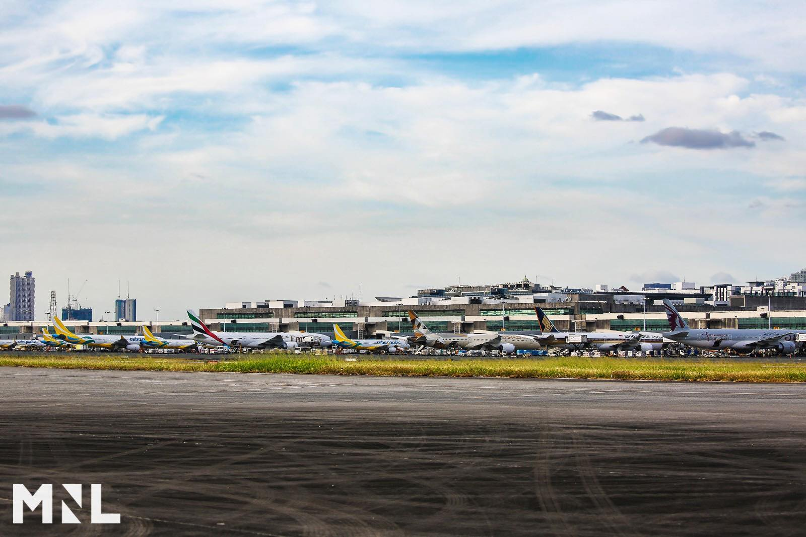
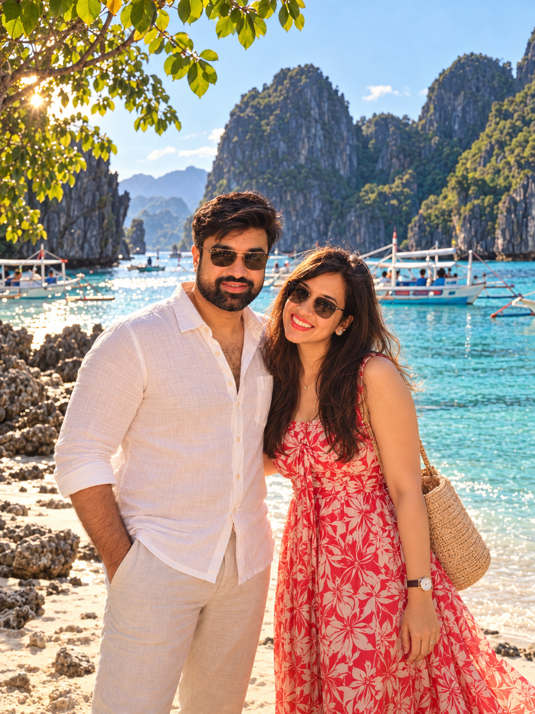
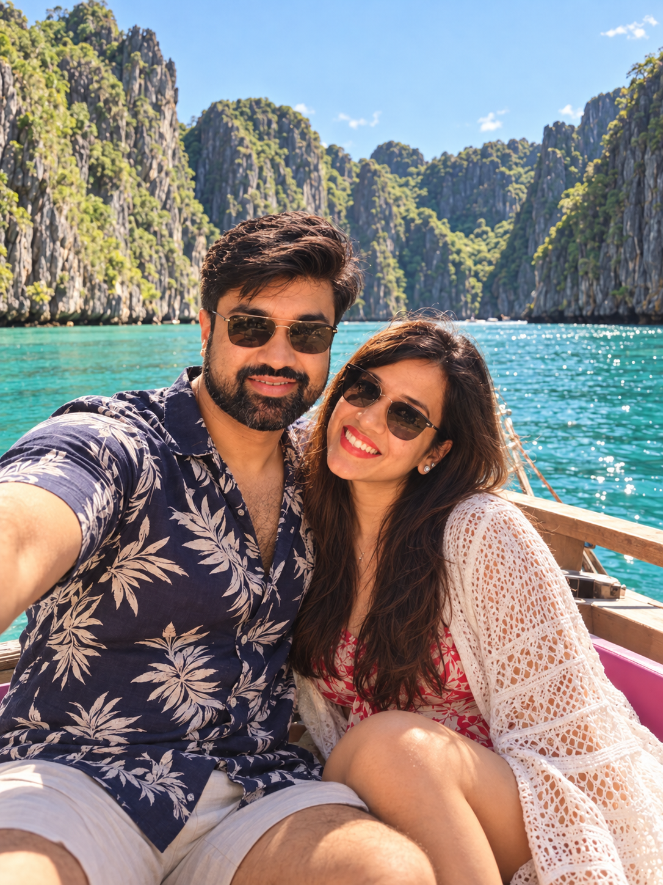
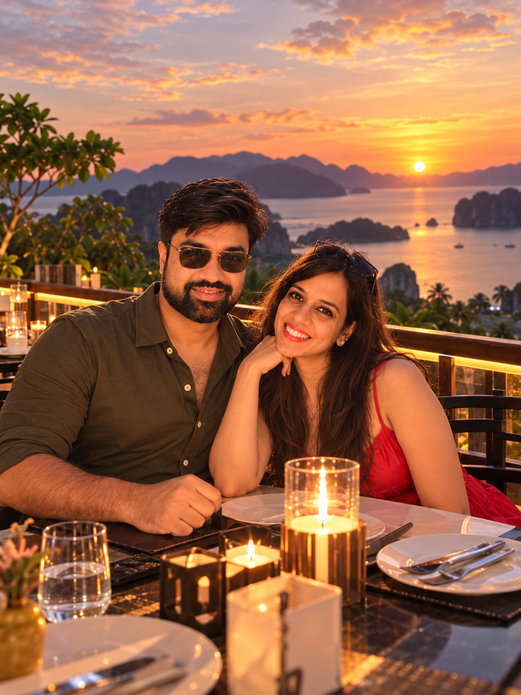
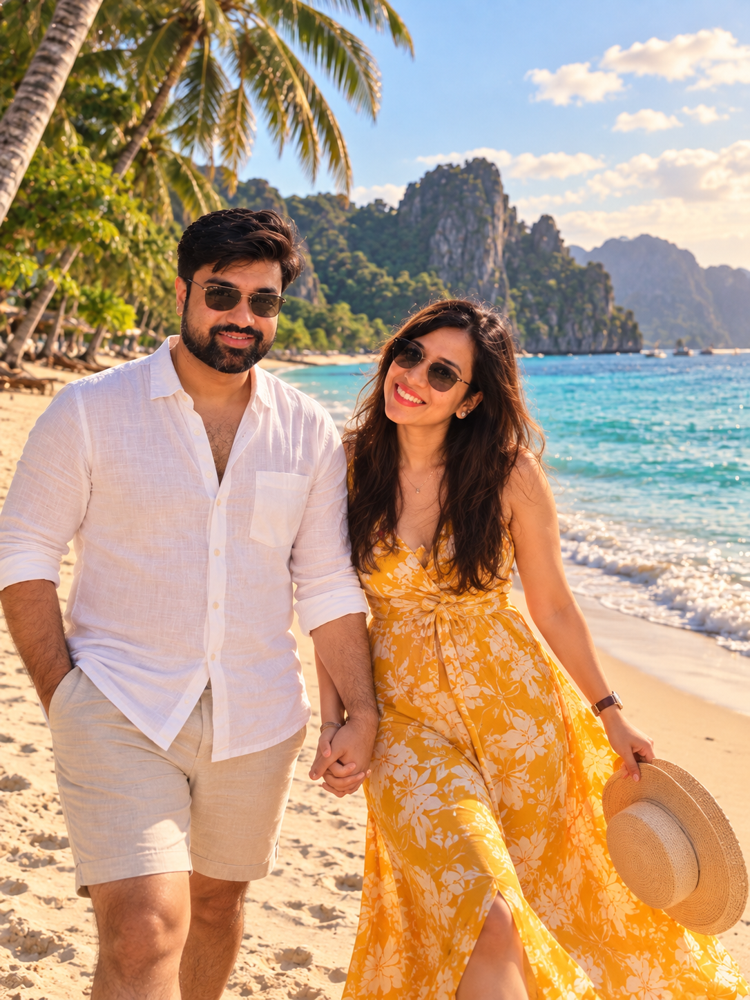
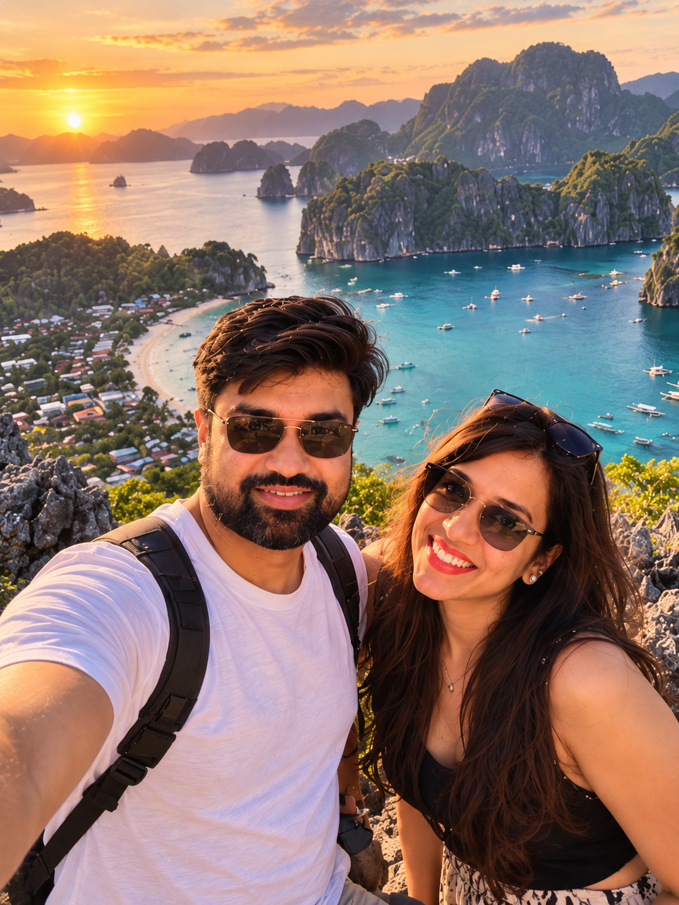
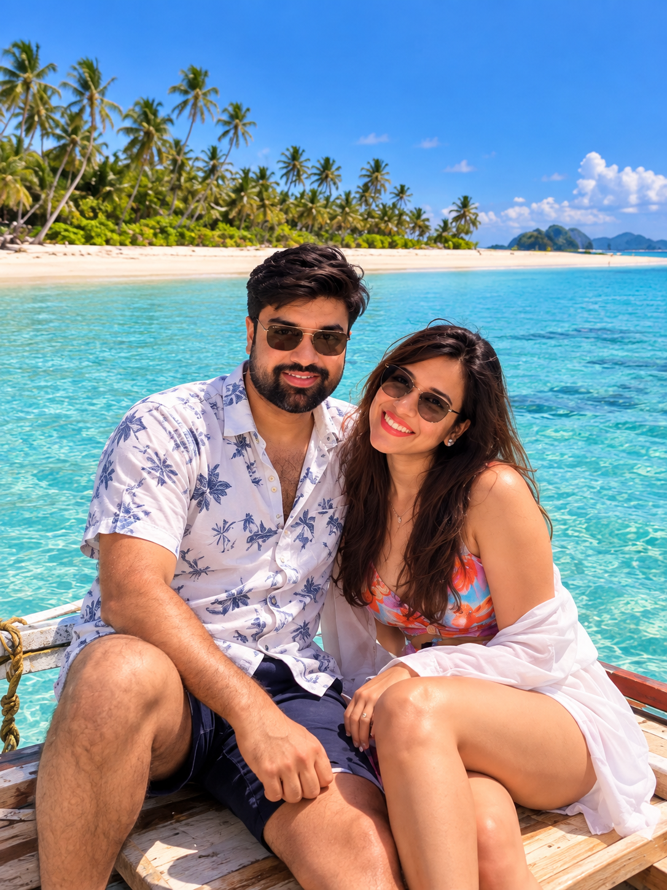

BLR → MNL → ENI → USU → MNL → BLR9 nights · Christmas + New Year
01 / The call
Recommended route
Choose El Nido + Coron.
This is the rare option that rewards the journey without making the holiday feel like a relay race. You get two distinct Palawan worlds—El Nido’s theatrical lagoons and Coron’s lakes, wrecks, and warm springs—with a deliberately gentle New Year finish.
01BengaluruDepart
02Manila1 night
03El Nido3 nights
04Coron4 nights
05HomeReturn
02 / The alternatives
Three good routes. One clear fit.
Use this as the deciding lens. The highlighted route is built for scenery, recovery time, and a dependable New Year plan.
Option A
Recommended for this brief
El Nido + Coron
The strongest fit when lagoons, lakes, snorkelling and unstructured island time matter more than nightlife or land-based variety.
Bases after Manila
2
Transfer type
Flight + open-sea ferry
Best for
Palawan-first travel
Option B
Boracay + El Nido
A better fit for a polished beach base, dining and nightlife before a shorter Palawan chapter.
Bases after Manila
2
Transfer type
Flight + island boat + flight
Best for
Social beach time
Option C
Cebu / Bohol + El Nido
The widest mix—urban Cebu, Bohol countryside and Palawan—but it asks the most of a 10-day holiday.
Bases after Manila
3
Transfer type
Flights + ferry
Best for
Land + sea variety
Why Option A is first
It protects the point of the holiday.
It concentrates the trip around two complementary Palawan experiences rather than adding a third region. That means two full El Nido boat days, a Coron lake day and a real recovery day—without claiming that it is universally “best.”
Choose A when: signature lagoons and lakes are the priority; you accept one weather-sensitive ferry; a quieter NYE is fine.
Choose B instead when: White Beach, restaurants and nightlife are essential, and the current Caticlan–El Nido flight works for your date.
Choose C instead when: waterfalls, countryside and Bohol wildlife matter more than unhurried beach time.
Do not book A unchanged if: you cannot make a sensible connection to Clark for El Nido. Current airline reporting says the El Nido service is operated from Clark, not a guaranteed Manila departure.
02B / Full alternatives
Two complete ways to choose differently.
Both routes are workable only when their specific flights and ferries are available for the actual dates. These are pacing blueprints, not transport reservations.
Option BBoracay + El NidoFor White Beach, sunset dining and a livelier NYE+
Use this if the beach-and-social part of the holiday is as important as Palawan. Boracay needs Caticlan airport plus the onward island transfer; the El Nido leg must be confirmed as a live Cebgo/AirSWIFT route. Nights: Manila 24 Dec, Boracay 25–27 Dec, El Nido 28–31 Dec, Manila buffer on 1 Jan only if the real ticket needs it. Official Boracay activities · 2026 El Nido connectivity update.
Thursday · 24 December
Bengaluru → Manila
Today
Land at NAIA
Hotel transfer
Sleep

Ninoy Aquino International Airport, Terminal 3. Photo: Manila International Airport Authority, public domain.
The activity. This night is the landing, not a city tour. You clear Ninoy Aquino (MNL), take the hotel’s airport transfer, and stop.
Morning / arrival. The international arrival is the whole first movement: immigration, baggage, then the hotel car. Do not add Intramuros.
Midday. There is no sightseeing block. If the flight lands late, the only errands are cash, an eSIM, and dinner within walking distance of the hotel.
Late afternoon / evening. Eat nearby and sleep. Save the Caticlan flight, passport, and return ticket offline, and complete eTravel if you are still inside the allowed window.
Constraint. The official eTravel page is the source for arrival registration. Christmas-week hours for anything else are unverified here, so this night stays at the airport hotel.
Stay:Belmont Hotel Manila — airport-area candidate; confirm the transfer policy directly.
Before bed: save the Caticlan flight, passport, and return ticket offline. Complete eTravel if you are still inside the allowed window.
White Beach, Boracay. Photo: Angelo Juan Ramos, CC BY 2.0.
The activity. The day is the crossing onto Boracay and a first evening on White Beach, not a tour.
Morning. Fly to Godofredo P. Ramos Airport (Caticlan / MPH). The island sequence already on this day is a short van to Caticlan jetty, a boat of about 10–15 minutes to Cagban Port, then a tricycle or hotel transfer to Station 2.
Midday. Check in. Wading only, and stay waist-deep. Do not add a tour; Christmas hours can slow the jetty.
Late afternoon. Be on White Beach for sunset, then dinner on the sand at Station 2.
Constraint. Confirm environmental and terminal fees, which boat company the hotel uses, and that someone meets you at Cagban. The Department of Tourism Boracay page is this day’s source.
Caution. Wading only. Stay waist-deep.
Stay: first of three nights at Henann Regency Resort & Spa, a Station 2 candidate for restaurants and the walk between Stations 1 and 3.
Book / confirm: environmental and terminal fees, which boat company the hotel uses, and that someone meets you at Cagban.
White Beach, Boracay. Photo: Angelo Juan Ramos, CC BY 2.0. Willy’s Rock, White Beach. Photo: Eugene Alvin Villar, CC BY-SA 4.0.
The activity. One west-coast outing only: a paraw sail, which does not require swimming, or a licensed helmet dive. Life jacket on for any snorkel. Not parasailing.
Morning. Breakfast on White Beach. Book the single activity for late morning.
Midday. Lunch back at Station 2. Leave a second boat for another day.
Late afternoon. Walk to Willy’s Rock at Station 1 for sunset. A drink at Diniwid is optional if you want a smaller cove, then dinner at D’Mall.
Suggestion. The station walk is the shape of the day. Which operator is running, and at what hour, is unverified until you book it. Philippines Tourism’s beach-stations page is the source for how White Beach is organised.
Caution. A paraw does not require swimming. Helmet dive is the suitable in-water choice. Do not book parasailing. Life jacket on for any snorkel.
Stay: second night at Henann Regency.
Bring: reef-conscious sunscreen, cash for the boat and tricycles, and a dry bag.
Puka Beach, Boracay. Photo: Paolobon140, CC BY-SA 3.0.
The activity. A morning at Puka Beach on the north coast, then a slow walk back along White Beach. Not an island-hopping day.
Morning. Go to Puka only — about 30–45 minutes by tricycle on the main road, or a boat from White Beach if the sea is calm. Wade only, and stay waist-deep.
Midday. Eat lunch at a beach shack and start back so you are at Station 2 by mid-afternoon.
Late afternoon. Walk from Station 1 to Station 3 and have dinner. Pack tonight; the flight day starts with the boat back to Caticlan.
Constraint. Confirm the Puka tricycle or boat in the morning, and tomorrow’s Caticlan check-in time with the hotel. Source: Department of Tourism, Boracay.
Caution. Wading only. Stay waist-deep.
Stay: third night at Henann Regency. Pack tonight; the flight day starts with the boat back to Caticlan.
Book / confirm: the Puka tricycle or boat in the morning, and tomorrow’s Caticlan check-in time with the hotel.
El Nido town and Bacuit Bay. Photo: Micluna, CC BY-SA 4.0.
The activity. A transfer day into El Nido town. The beachfront dinner is the only plan after check-in. No island tour.
Morning. Hotel transfer to Cagban, boat to Caticlan, then fly only on a ticket you already hold.
Midday. A 2026 airline update puts El Nido services with Cebgo/AirSWIFT from Clark and other tourist gateways, so a Caticlan–El Nido sector has to be live for this date. If the ticket goes via Cebu or Clark, the whole day is transit.
Late afternoon. On arrival, van into El Nido town, check in, and eat on the beachfront.
Constraint. Confirm the airport pair and the van before you leave Boracay. If that flight does not exist, re-route this option before you buy the international ticket. Source: the 2026 Cebgo/AirSWIFT operations update.
Book / confirm: the airport pair and the van from the El Nido airport before you leave Boracay. If that flight does not exist, re-route this option before you buy the international ticket.
Big Lagoon, El Nido. Photo: Marciano Villavito, CC BY-SA 4.0.
The activity. A full shared or small-group boat day on Tour A: Big Lagoon, Secret Lagoon, Shimizu Island, Payong-Payong and Seven Commandos.
Morning. Pier departure. This day’s existing plan uses a window around 08:30–09:00; treat that as the operator’s call, not a fixed sailing.
Midday. Lunch on an island, with the lagoon and beach stops the operator is actually running. You see them from the boat and the beach.
Late afternoon. Return, then dinner in town and an early night.
Constraint. Stops, permits and fees change with the operator. Sources: the official Tour A overview and the El Nido municipal publication.
Caution. Lagoons can be seen from the boat and beach. Secret Lagoon’s usual way in is a short swim through a gap. Ask the operator to skip that stop, or to take you only with a life jacket and a guide if there is a ladder. Do not count on climbing in unaided. No cliff jumps.
Stay: second night at The Funny Lion El Nido.
Bring: swimsuit, sun protection, dry bag, water shoes, water and cash.
Matinloc Island landing, El Nido. Photo: Say Bernardo, CC BY-SA 4.0.
The activity. Tour C if you still want a boat: Hidden Beach, Secret Beach, Matinloc Shrine, Talisay Beach and Helicopter Island. If Tour A was enough, the activity is a town day instead.
Morning. On the boat, beaches and boat landings only. Ashore, stay on the beach at Corong-Corong.
Midday. Island lunch on Tour C, or lunch in town if you cancelled the boat.
Late afternoon. Finish in time for a normal dinner. The ashore version ends with sunset at Las Cabanas. Tomorrow is New Year’s Eve, so this is not a late-night day.
Constraint. Confirm which Tour C stops are operating, or cancel the boat and keep the day on foot. Source: Discover El Nido’s Tour C notes.
Caution. Beaches and boat landings only. No cliff jumps. The town-day alternative stays the right choice if the previous boat day was enough.
Stay: third night at The Funny Lion El Nido.
Book / confirm: which Tour C stops are operating, or cancel the boat and keep the day on foot.
El Nido town and Bacuit Bay. Photo: Micluna, CC BY-SA 4.0.
The activity. A reserved New Year dinner in El Nido, after a quiet beach day. No island-hopping.
Morning. Late breakfast, then time on the beach at Corong-Corong or at the hotel pool. No snorkel add-on.
Midday. A café afternoon in town. Do not add a boat.
Late afternoon / evening. Dinner is a table you have already reserved — a beachfront restaurant or the hotel’s own New Year sitting. Confirm how you get back after midnight before you leave the hotel.
Constraint. A generic beach countdown is not assumed. Confirm the dinner booking, the return tricycle, and the property’s NYE policy. Source: the hotel’s El Nido property page.
Caution. No snorkel add-on.
Stay: fourth night at The Funny Lion El Nido.
Before evening: dinner booking, return tricycle, and the property’s NYE policy. A generic beach countdown is not assumed.
Option CCebu + Bohol + El NidoFor waterfalls, Bohol landscapes and a shorter Palawan finale+
This is the broadest route and the least forgiving. It uses one additional base and a Cebu–Bohol fast ferry; the Bohol–El Nido flight should be treated as a schedule-dependent connection, not assumed. Nights: Manila 24 Dec, Cebu City 25–26 Dec, Panglao 27–28 Dec, El Nido 29–31 Dec, Manila buffer on 1 Jan only if the real ticket needs it. Bohol port schedule reference · 2026 El Nido connectivity update.
Thursday · 24 December
Bengaluru → Manila
Today
Land at NAIA
Hotel transfer
Sleep
Ninoy Aquino International Airport, Terminal 3. Photo: Manila International Airport Authority, public domain.
The activity. Land, transfer, eat, sleep. Tomorrow is a domestic flight, so this night stays at the airport side of the city.
Morning / arrival. Land at Ninoy Aquino (MNL) and take the hotel transfer. No Intramuros.
Midday. No sightseeing block. Cash and an eSIM only if you still need them.
Late afternoon / evening. Dinner nearby, then offline copies of the Cebu flight, passport, and hotel confirmations. Complete eTravel if it is still required.
Constraint. Source: official eTravel. Anything beyond the airport hotel tonight is unverified and not part of this day.
Basilica del Santo Niño, Cebu City. Photo: Patrickroque01, CC BY-SA 4.0. Magellan’s Cross, Cebu City. Photo: Mkmmontesines, CC BY-SA 4.0.
The activity. The city arrival, plus one plaza only if it is open: Basilica del Santo Niño and Magellan’s Cross. South Cebu waits until tomorrow.
Morning. Fly to Mactan-Cebu (CEB). A hotel car or MyBus crosses the Mactan bridges into Cebu City.
Midday. Allow 45–75 minutes with Christmas traffic, then check in at Ayala Center.
Late afternoon. If the basilica and the cross are open, that plaza is the only sightseeing — a 15-minute walk from the hotel area — then dinner in the mall.
Constraint. Christmas opening hours for the plaza are unverified until you check them. Book a 06:30 driver for Kawasan and ask the driver to stop at the lower falls viewpoint, not a canyon trip. Source: Department of Tourism, Cebu.
Stay: first of two nights at Seda Ayala Center Cebu, so the 27 Dec ferry at Pier 1 is a city-side departure, not a Mactan one.
Book / confirm: a 06:30 driver for Kawasan, and the lower-falls stop, not a canyon trip.
Kawasan Falls, Badian, Cebu. Photo: Andrewhaimerl, CC BY 4.0.
The activity. The lower falls at Kawasan, seen from the edge. The photograph is the falls and the turquoise pool. Do not do the canyon. The Moalboal sardine run is only if a guide puts you in a life jacket and stays beside you.
Morning. Leave Ayala by 06:30. The drive to Badian is about three hours.
Midday. View the lower falls from the edge. Skip canyoneering. Continue to Panagsama only with a guide and a life jacket; otherwise skip the sardine run.
Late afternoon. Drive back to Cebu City for dinner. Sleep in the city. The ferry leaves from Cebu port, not from the south.
Constraint. Water shoes, a dry bag, a change of clothes, and cash for the guide and entrance. Source: Department of Tourism, Cebu.
Caution. Do not do canyoneering (jumps and river swims). View the lower falls from the edge. Moalboal sardine run only if a guide puts you in a life jacket and stays beside you; otherwise skip it.
Stay: second night at Seda Ayala Center Cebu.
Bring: water shoes, a dry bag, a change of clothes, and cash for the guide and entrance.
Alona Beach, Panglao. Photo: Marife.altabano, CC BY-SA 4.0.
The activity. The fast ferry to Tagbilaran and the van on to Alona Beach. No Chocolate Hills today.
Morning. Fast ferry from Cebu Pier 1 to Tagbilaran. OceanJet’s usual crossing is about two hours when that sailing is on the board; confirm the actual boat the day before.
Midday. From Tagbilaran port, a van crosses to Panglao in about 20–30 minutes and drops you at Alona Beach.
Late afternoon. Swim if you want. Dinner on Alona. Book tomorrow’s countryside car with an early Chocolate Hills start.
Constraint. Confirm ferry check-in and port pickup. Sources: OceanJet and the Bohol port schedule reference.
Chocolate Hills, Bohol. Photo: Lady01v, CC BY-SA 4.0. Philippine tarsier, Bohol. Photo: Charles J. Sharp, CC BY-SA 4.0.
The activity. A countryside circuit: the Chocolate Hills viewpoint in Carmen, then a short visit to the Philippine Tarsier Sanctuary in Corella. A Loboc River lunch cruise only if the hills road has not already run long.
Morning. Leave Panglao around 07:00. The complex is about 1.5 hours inland; do the viewpoint before the tour buses stack up.
Midday. The sanctuary next: quiet, no flash, no touching, and only a guide from the sanctuary itself. Skip the river if you are already behind.
Late afternoon. Alona for a swim and dinner. Pack for the flight day.
Constraint. Cash for entrances, modest clothing at the sanctuary, and water for the inland drive. Sources: the Chocolate Hills guide and the Philippine Tarsier Foundation. The photographs are the Chocolate Hills viewpoint and a Philippine tarsier in Bohol. The sanctuary visit itself is quiet: no flash, no touching, and only a guide from the sanctuary.
Stay: second night at Henann Resort Alona Beach. Pack for the flight day.
Bring: cash for entrances, modest clothing at the sanctuary, and water for the inland drive.
El Nido town and Bacuit Bay. Photo: Micluna, CC BY-SA 4.0.
The activity. Travel only on a ticket bought before you leave Bengaluru, then a town arrival. No boat tour.
Morning. The realistic shapes are Panglao (TAG) or a hop back through Cebu (CEB), then onward toward El Nido or Clark.
Midday. A 2026 update says El Nido flights are not a guaranteed Manila departure, and a Bohol–El Nido nonstop should not be assumed. If that chain does not exist for 29 Dec, rebuild this option.
Late afternoon. On a successful arrival: van to town, check-in, dinner.
Constraint. Confirm the whole air path, including any Clark or Cebu connection, plus the town van. Source: the 2026 Cebgo/AirSWIFT operations update.
Big Lagoon, El Nido. Photo: Marciano Villavito, CC BY-SA 4.0.
The activity. The one full Palawan boat day on this route. Tour A: Big Lagoon, Secret Lagoon, Shimizu Island, Payong-Payong and Seven Commandos.
Morning. Pier departure. There is no Tour C tomorrow — New Year’s Eve stays on shore.
Midday. Island lunch, with the lagoon and beach stops the operator is running that day.
Late afternoon. Late-afternoon return, then dinner in town.
Constraint. Bring a swimsuit, dry bag, water shoes, sun protection and cash for fees. Stops and permits follow the operator, not this page. Source: the official Tour A overview.
Caution. Lagoons can be seen from the boat and beach. Secret Lagoon’s usual way in is a short swim through a gap. Ask the operator to skip that stop, or to take you only with a life jacket and a guide if there is a ladder. Do not count on climbing in unaided. No cliff jumps.
Stay: second night at The Funny Lion El Nido.
Bring: swimsuit, dry bag, water shoes, sun protection and cash for fees.
Not photographs from this holiday. An illustrative collage so you can picture the two of us across island shores — beaches, boats, and late light.

⌖ El Nido, Palawan

⌖ Big Lagoon, El Nido

⌖ Coron, Palawan

⌖ Nacpan Beach, El Nido

⌖ Taraw Cliff Viewpoint, El Nido

⌖ Balabac, Palawan
03 / The day-by-day
Ten days, no rush.
Big water days alternate with transfer and recovery time. That is the difference between seeing Palawan and actually enjoying it.
Caution. You do not need to swim to do this trip. Tell every boat operator before paying: “I don’t swim. No jumps. Life jacket on in the water.” Skip anything sold as a jump, cliff entry, or swim-through.
Thursday · 24 December
Bengaluru → Manila
Today
Land at NAIA
Hotel transfer
Sleep
Ninoy Aquino International Airport, Terminal 3. Photo: Manila International Airport Authority, public domain.
The activity. Arrival and a night at the airport hotel. This is intentionally a no-sightseeing day.
Morning / arrival. Land, clear the airport, and take the hotel transfer.
Midday. No city block. Organise cash and an eSIM only if you need them.
Late afternoon / evening. Dinner near the hotel, then sleep. Keep passport, return ticket and hotel confirmations offline.
Constraint. Source: official eTravel for arrival registration. Intramuros is tomorrow, and only if the venues are open.
Stay:Belmont Hotel Manila — airport-area candidate; confirm the transfer policy directly.
Before bed: keep passport, return ticket and hotel confirmations offline.
Fort Santiago gate, Intramuros. Photo: Vyacheslav Argenberg, CC BY 4.0.
The activity. One compact Intramuros walk — Fort Santiago, San Agustin Church or Plaza Roma — not a full-city Christmas day.
Morning. Slow breakfast, then the walled-district walk only after you have checked that the stop you chose is open.
Midday. Stay inside that one cluster. Do not add a second district.
Late afternoon. Back toward the airport hotel. Use the evening to confirm tomorrow’s domestic flight, baggage allowance and the El Nido arrival transfer.
Constraint. Christmas opening hours are not assumed. Check them with the venue. Source: the Department of Tourism’s Intramuros guide.
Stay: second night at Belmont Hotel Manila, or another airport-area hotel with a confirmed airport transfer.
Book / confirm: tomorrow’s domestic flight, baggage allowance and El Nido arrival transfer.
El Nido town and Bacuit Bay. Photo: Micluna, CC BY-SA 4.0.
The activity. The flight into El Nido and a town check-in. No island tour today.
Morning. Do not assume a Manila–El Nido direct flight. A 2026 airline update states El Nido services are operated from Clark and other tourist gateways.
Midday. Use this day only after a real ticket confirms the airport, the flight and the ground-transfer timing.
Late afternoon. Van into town, check in, and eat. The Funny Lion is a town-base candidate near tour operators and the ferry terminal.
Constraint. Confirm the Clark connection first, then an accredited Tour A operator and any lagoon permit requirements. Sources: the 2026 Cebgo/AirSWIFT operations update and the hotel’s location details.
Stay:The Funny Lion El Nido — a town-base candidate near tour operators and the ferry terminal.
Book / confirm: the Clark connection first, then an accredited Tour A operator and any lagoon permit requirements.
Big Lagoon, El Nido. Photo: Marciano Villavito, CC BY-SA 4.0.
The activity. Tour A: Big Lagoon, Secret Lagoon, Shimizu Island, Payong-Payong and Seven Commandos, by shared or small-group boat. The photograph is Big Lagoon, the cliff-walled green water; you see it from the boat and the beach, then continue to the other beaches on the operator’s list.
Morning. Leave from the pier with the operator. The exact departure is theirs to confirm.
Midday. The lagoon and beach stops, plus whatever lunch the boat is serving that day.
Late afternoon. Back in town. Swim kit can dry; dinner stays simple so Tour C tomorrow is still appealing.
Constraint. Stops, permits and fees change. Use the current local operator itinerary rather than this page as the final authority. Sources: the official Tour A overview and the El Nido municipal publication.
Caution. Lagoons can be seen from the boat and beach. Secret Lagoon’s usual way in is a short swim through a gap. Ask the operator to skip that stop, or to take you only with a life jacket and a guide if there is a ladder. Do not count on climbing in unaided. No cliff jumps.
Matinloc Island landing, El Nido. Photo: Say Bernardo, CC BY-SA 4.0.
The activity. Tour C: Hidden Beach, Secret Beach, Matinloc Shrine, Talisay Beach and Helicopter Island. Or a rest day if two boat days feel excessive. The photograph is the Matinloc landing: boats tie up under the cliff, and the shrine is a short step ashore.
Morning. Boat departure if you booked it. If you are ashore, keep the morning slow.
Midday. The west-side beaches and the shrine, only at the stops the operator confirms are open.
Late afternoon. Return with enough evening left to pack for the Coron ferry.
Constraint. Book Tour C with a locally licensed operator and ask which stops are operating on your date. Source: Discover El Nido’s Tour C stop list and practical notes.
Caution. Beaches and boat landings only. No cliff jumps. The town-day alternative stays the right choice if the previous boat day was enough.
Coron town port, the end of the crossing. Photo: Patrickroque01, CC BY-SA 4.0.
The activity. The fast ferry from El Nido to Coron. Not a same-day flight, and not a tour on either end.
Morning. Take the ferry only after you have verified the operator and the sailing day directly. Arrive early.
Midday. The crossing itself. Pack motion-sickness supplies if they suit you. Current reporting says schedules and operators can shift.
Late afternoon. Keep the evening flexible after you reach Coron Town. The Funny Lion Coron site states Busuanga Airport is about 30 minutes away; that is context for later, not a task for this afternoon.
Constraint. Do not connect this crossing to a same-day flight. Source: El Nido Map’s date-stamped 2026 ferry field guide.
Caution. No swimming on the crossing.
Stay:The Funny Lion Coron — a Coron Town candidate; its site states Busuanga Airport is about 30 minutes away.
Prepare: arrive early, pack motion-sickness supplies if suitable, and have a flexible evening.
Kayangan Lake viewpoint, Coron Island. Photo: Lyndon Aguila, CC BY-SA 4.0.
The activity. A Coron lake circuit built around the Kayangan viewpoint. At Kayangan the boat lands below the viewpoint in the photograph; you climb the stairs and look down. The lake swim is optional. Skip Barracuda Lake. Twin Lagoon only with the guide beside you.
Morning. Boat out with the operator. The Department of Tourism identifies all three lakes as Coron highlights.
Midday. The Kayangan stairs and viewpoint, then Twin Lagoon only if the guide stays with you. Expect boat transfers. Barracuda stays off the boat.
Late afternoon. Back in town. This is the big water day; keep the evening light.
Constraint. Bring water shoes, a dry bag, water and sun protection. Which lakes are open that morning is the operator’s confirmation, not this page. Source: Department of Tourism, Coron.
Caution. Kayangan viewpoint and stairs do not require swimming; the lake swim is optional. Skip Barracuda Lake (it is a swim into deeper water). Twin Lagoon only if the guide stays with you and the jacket stays on.
Coron town at night. Photo: Patrickroque01, CC BY-SA 4.0.
The activity. An easy Coron day, then a New Year’s Eve dinner or hotel event you have already booked.
Morning. Optional: the hotel pool or a local café. No snorkel. Do not stack a second lake circuit.
Midday. Keep it unstructured so the evening is the point.
Late afternoon / evening. The celebration itself is not assumed. Confirm the venue’s 2026 programme, dinner, return transport and the property’s NYE policy before you go out.
Constraint. Source: the hotel’s official Coron property page. A beach countdown that has not been booked is unverified.
Caution. No swimming. The optional snorkel stays off the plan.
A pool at Maquinit Hot Spring, Coron. Photo: Paul Christian B. Yang-ed, CC0.
The activity. A recovery day, with Maquinit Hot Spring around sunset if it is operating.
Morning. Late breakfast. A massage or the pool is the suggestion for the empty hours; neither is a booked claim.
Midday. Stay slow. Do not add a wreck dive or another lake tour.
Late afternoon. Maquinit if it is open: sit and wade in the shallow pools. The official tourism guide names it as a Coron activity; local guidance notes that the water is hot.
Constraint. Check holiday opening hours and entry conditions directly before you leave. Sources: Department of Tourism, Coron, and the local Maquinit guide.
Caution. Shallow hot-spring pools; sit and wade. Not a swimming test. Still no head-under expectation.
Ninoy Aquino International Airport, Terminal 3. Photo: Manila International Airport Authority, public domain.
The activity. Fly from Busuanga (Coron) to Manila and continue home. No buffer sightseeing unless the international connection is not protected.
Morning. Airport transfer for the Busuanga flight you actually hold.
Midday. The Manila connection. Philippine Airlines currently lists Manila–Coron flights, but your date, terminal and connection time must be checked with the carrier.
Late afternoon. The onward international departure, or a Manila buffer night only if that connection is not protected.
Constraint. Reconfirm both flight segments, terminals and baggage conditions. What you may carry into India is in What to bring home. Source: the Philippine Airlines route page.
Stay: none planned—homeward travel day. Add a Manila buffer night only if the international connection is not protected.
Before travel: reconfirm both flight segments, terminals and baggage conditions.
Sunset dinners, barefoot beach bars and a lively-but-not-clubby Coron New Year’s Eve.
05 / Make it real
Book in the right order.
Christmas and New Year remove the safety net. Lock the scarce, date-specific pieces first; leave weather-sensitive pleasures flexible.
01
International flightsBLR ↔ MNL, with sensible arrival and return buffers.
02
New Year’s accommodationCoron first—this fixes the shape of the whole trip.
03
Domestic air + ferryManila → El Nido; Coron → Manila; El Nido → Coron ferry.
04
El Nido stay + key toursSecure good cancellation terms, then choose tours.
05
Transfers & dinnersAirport pickups, NYE dinner, and only the experiences you really want.
06 / Before you go
Your ready list.
These are the small details that protect an island itinerary from becoming stressful. Gifts and duty-free sit in Bring home.
Entry & documents
Passport valid 6+ months beyond travel
Return / onward ticket and hotel confirmations
Complete eTravel through the official site in the permitted pre-arrival window
Verify current entry rules before purchase
Money & connection
Cards plus PHP cash and a backup card
eSIM / local SIM; download offline maps
Save every transfer confirmation offline
Carry a charged power bank
On-water kit
Dry bag + waterproof phone pouch
Rash guard, water shoes, hat and sunglasses
Reef-conscious sunscreen + electrolytes
Personal motion-sickness medication, if appropriate
07 / Bring home
What travelers brought home.
Personal write-ups for what to look for. Official notes only for what to avoid or declare. Option A still flies Busuanga (Coron) through Manila to Bengaluru. This is not a shop reservation, a current price, or a promise a counter is open.
Traveler reports · food
Accessed 25 September 2026. These are what writers said they bought or would pack. A figure on a blog is that author’s report, not a current fare. None are quoted here.
Coron. Leslie Green and Justin Taylor, in Well Worth It: Coron (23 February 2025), wrote that they bought a small bag of garlic cashews at Melb’s Cashew Factory and liked the honey-cashew brittle. They describe the stop as a place to sample flavors and watch cashews being processed.
Coron. Lakwatserong Hampaslupa, trip 14–18 August 2024, in The Island of Legends (posted 14 December 2025, updated 22 December 2025), visited Palawan Cashew Company in Sitio Dipaculao, about 3 km from Coron town, and wrote that the processed nuts come in different packaging and flavors. The post does not say a bag was packed for the flight.
Generic Philippines, not pinned to El Nido or Coron.Travel around the Philippines (published 13 November 2025, updated 26 March 2026) says dried mango is a go-to gift, names 7D as the brand they like, and also names Cebu Brand and Philippine Brand. They say packs turn up at airports and that a supermarket stop ahead of the airport costs less. They also suggest banana chips, and a bottle of Tanduay or Don Papa rum. That rum line is their preference. Leave alcohol for the watch-out and the suggestion below.
Traveler reports · coffee
Accessed 25 September 2026. Drinks in town are not the same as beans in a suitcase.
Coron, on this route. The same Well Worth It post recommends a cashew-butter coffee at Good Grind after the Mt. Tapyas hike, and a cup of Tagbanua coffee at Epic in Coron town. They do not say they packed beans.
Manila city, not the island days. The souvenir guide says you can drink coffee and buy beans at Commune and at Fresh Roaster Coffee Tonya. They single out barako from Batangas and Cavite, and they tell readers to skip civet (alamid) coffee. Option A does not include a Manila café day.
Not on Option A. A market diary from Taal, Batangas, Soft Luxe Travels (26 September 2025), says the writer had a kilo of kapeng barako ground as a gift for her husband. That town is off this route.
Traveler reports · weaves
Accessed 25 September 2026. The guide below is a traveler roundup, not a receipt from this itinerary.
El Nido.Travel around the Philippines points to the Kalye Artisano market at Lio Beach, and to a roadside shop selling fiber bags, hats, and napkin rings. The page does not say the authors bought a named piece there.
Generic Philippines. The same guide recommends banig pieces (mats, placemats, bags, toiletry pouches), other textile bags, and piña cloth for a barong or a baro’t saya. They like the Kultura Filipino chain in malls, including Manila, for textiles, a barong, T-shirts, and food gifts. A mall stop is not on the Option A connection.
Manila stopover, not a gift list. Leslie Green’s Well Worth It: Manila (10 February 2025) covers 72 hours before Coron and El Nido. It is meals, walks, and a weekend market for samples. It does not name a souvenir they packed.
Traveler reports · pearls
Accessed 25 September 2026. One on-route purchase, plus shops the guide names off the island nights.
Coron.Stamp in Passport (trip 23 December 2025 – 3 January 2026, posted 5 February 2026) shopped at Pickapearl, near their Coron hotel. The writer picked pearls and had rings made in the shop. The post says that was the more expensive choice and does not give a figure.
Not the El Nido or Coron town days. The souvenir guide suggests pearls at Greenhills in Manila, at Kultura with a certificate, at Robinsons in Puerto Princesa, and at Jewelmer. Puerto Princesa and a Manila mall are not on Option A. Their peso examples are omitted here. They are that page’s report, not a current fare.
Left behind, El Nido and the ferry. The same Stamp in Passport writer returned two shells picked up in Boracay to the sea at Lio Beach, and wrote that a dog at the El Nido–Coron ferry sniffed suitcases for fruit and seashells. That is their account. The rule to follow is the watch-out below.
Traveler reports · airport
Accessed 25 September 2026. What a guide says you can find, not a stock list for 2 January 2027.
Airports in general.Travel around the Philippines says dried mango is sold at airports, and that buying it earlier in a supermarket is the cheaper move. They also mention Islands Souvenirs, usually in malls and airports, for T-shirts, magnets, and keychains, and they prefer Kultura’s range.
NAIA on this ticket. Which counter exists, and that Duty Free’s goods are not described, is in the watch-out. The guide does not name the terminal for a Bengaluru flight.